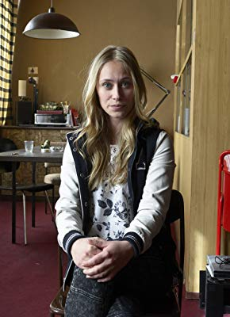

#1124 Groupies bleiben nicht zum Frühstück
Alternativ: Single by Contract (Originaltitel)

 IMDB-Wertung: 6.6 / 10
IMDB-Wertung: 6.6 / 10  Metascore: 0
Metascore: 0 
Durch Zufall lernt die 17-jährige Lila den charismatischen Chriz kennen und verliebt sich sofort Hals über Kopf in ihn. Lila kommt gerade erst aus Amerika zurück, wo sie das letzte Jahr als Austauschschülerin gelebt hat. Sie weiß nicht, dass in Deutschland inzwischen eine Band namens "Berlin Mitte" eine Massenhysterie unter den weiblichen Teenies auslöst. Vor allem Chriz, ihr Leadsänger, sorgt für Ohnmachtsanfälle und schlaflose Nächte bei unzähligen Mädchen und jungen Frauen - so auch bei Lilas jüngeren Schwester Luzy.Als Lila schließlich erfährt, in wen sie sich da verliebt hat, lassen die Komplikationen nicht lange auf sich warten.
Jahr: 2010
Dauer: 103 Minuten
FSK: 0
Land: Deutschland Studio: Walt Disney Studios Motion PicturesTonspuren:
Untertitel:
Auflösung: 1080p (1920x1040) Größe: 8140 MB
Genre: Komödie, Liebe
Regisseur: Marc Rothemund
Drehbuch: Kristina Magdalena Henn, Lea Schmidbauer
Soundtrack: Gerd Baumann
Darsteller:
 Kostja Ullmann als Chriz
Kostja Ullmann als Chriz Inka Friedrich als Dr. Angelika Lorenz
Inka Friedrich als Dr. Angelika Lorenz- Ben Braun als Tom
- Ralph Misske als Security Mann Flughafen
- Matthias Kupfer als Fan , uncredited
- Anna Fischer als Lila Lorenz
- Amber Bongard als Luzy Lorenz
- Josef Mattes als Gustav
- Nina Gummich als Nike
- Roman Knizka als Paul
- Michael Keseroglu als Horst
- Franziska Wulf als Isa
- Frank Ziegler als Danny
- Ole Fischer als Bob
-  Sina Tkotsch als Estefania
- Simone Hanselmann als Presseagentin
- Frank Streffing als Lehrer
- Peter Farkas als Labelchef
- Tobias Kasimirowicz als Werbe-Regisseur
- Matthias Zelic als Wächter Botanischer Garten
- Bernhard Geffke als Concierge
- Charlott Lehmann als Teenie 1
- Pauline Fuchs als Teenie 2
- Gülcan Kamps als Viva-Moderatorin
- Gabi Scheibert als Gewinnergirl Shirin
- Lilli Fichtner als Gewinnergirl Steffi
- Fanny Landuris als Bananengirl 1
- Isy Landuris als Bananengirl 2
- Magali Greif als Tina
- Nicole Mercedes Müller als Anne
- Ann-Kathrin Burmann als Katya
- Il Lee als Koreanischer Geschäftsmann
- Ute Maria Lerner als Security Frau Flughafen
- Petra-Maria Cammin als
- Marian Meder als Radio Fritz Mitarbeiter
- Gabriele Domschke als Ticketdame
- Harry Jalisch als Akkordeonspieler
- Ulrich Jackwitz als Rentner
- Henriette Gonnermann als Rentnerin
- Bernd Jaworek als Fotograf
- Oumy Sakho als Supermodel
- Markus Sprungalla als Reporter
- Sara Kamolz als Fan , uncredited
- Julian F.M. Stoeckel als Modedesigner , uncredited
Datei: X:\2010(G-M)\Groupies bleiben nicht zum Frühstück (2010, FSKo.Al., 1920x1040).mkv seit 22.05.2015
Festplatte: HD 2010(G-Z)-2011(A-F)
 Es gibt insgesamt 85 Filme in der Gruppe '2010(G-M)'
Es gibt insgesamt 85 Filme in der Gruppe '2010(G-M)'